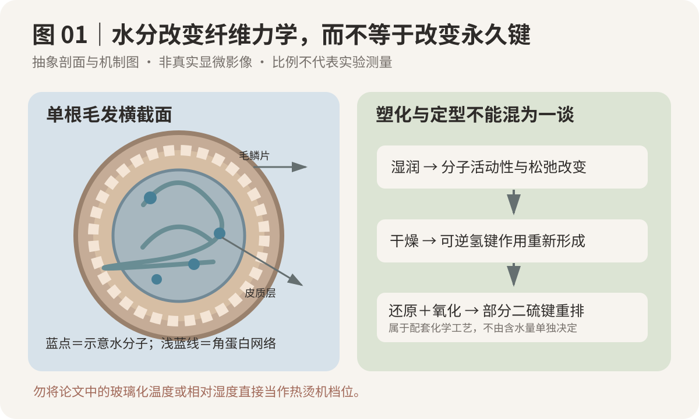
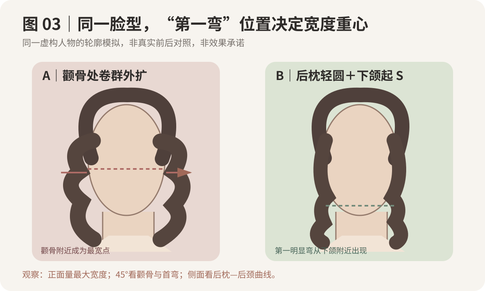
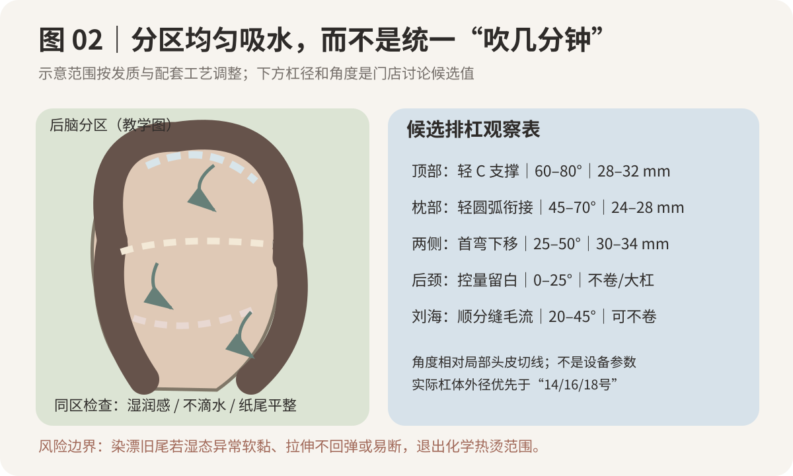

2026-10-17
【今日核心问题】冲水后两束发看起来都湿润，为什么热烫完成后，一束弹性自然，另一束却松散、发毛或出现折痕？
1. 从毛鳞片到皮质层，水影响的是哪一层？
毛鳞片与表面脂质影响润湿、摩擦和湿梳感，但用手摸到“表面不滴水”，并不能证明皮质层已经处于同一含水状态。皮质层的角蛋白中间丝与基质提供主要的机械支撑；二硫键属于较稳定的共价交联，氢键、盐键/离子相互作用及疏水作用则参与含水和形变时的整体响应。它们不是可逐根“数出来”的几个开关。
水的塑化作用是今天的关键：水进入纤维后，会改变蛋白链的相互作用与活动性，使弯曲、应力松弛和恢复表现随含水量、温度、时间变化。同样“手感柔软”，可能是水分改变的可逆状态，也可能伴随染漂后的结构损伤，二者不能混为一谈。干燥过程会改变非共价作用与暂时形态；水本身不等于还原剂，更不会单独重新建立二硫键。
2. 把整个热烫链条分成六段观察
| 过程 | 在做什么 | 常见判断失误 |
| 还原 | 配套还原体系在厂家条件下改变部分含硫键约束 | 仅凭 pH 或“拉成 C 型”估算精确断键比例 |
| 冲洗 | 按厂家规定清除还原剂；核对发区及发片的残留与吸水差异 | 以“冲过一遍”当作所有发区均匀完成 |
| 吸水与卷入 | 管理表面自由水、纸尾和毛束张力，建立预期曲率 | 过湿滴水、过干局部补喷不均；用猛拉弥补差异 |
| 热与干燥 | 温度、水分、时间改变形变与结构松弛，影响卷形一致性 | 只计时而不确认实际受热/干燥差异，重复高热补救 |
| 氧化定型 | 使用配套氧化体系，按说明完成规定条件和接触时间 | 认为氧化剂能修复此前已形成的断裂、折痕或漂损 |
| 洗后观察 | 比较自然干与规范吹整的卷度、弹性、摩擦、下摆 | 用一次吹整成品代替多次洗后稳定性 |
玻璃化转变（Tg）不是“达到某个温度，头发就自动定型”的开关。研究可用 DSC 等方法测定随水分变化的热学响应；它和热烫设备表面设定温度、发片真实温度、湿度、处理配方不是同一数值系统。尤其不能把论文中的“60%–70%相对湿度”误读成“60%–70%软化程度”。
3. 为什么两片头发容易发生差异？
同一区域内，发根未染、发中染色、发尾旧烫或漂过，吸湿与机械恢复可能不同；同样的毛巾吸水动作，厚片内部仍可能与表层不同。若有的发片持续滴水、有的已经发干，再叠加不同提升角、有效卷入长度和夹持压力，完成效果可能出现不一致。但这只是有科学机制支持的门店排错假设，不能把“含水不均”当作所有松卷、毛躁或弹性差的单一根因。
图1看什么：左边看毛鳞片、皮质层和水分示意；右边区分水塑化/可逆氢键作用与还原—氧化涉及的化学键重排。它不是微观实测图，也不是配方说明。

本次优先检索 2026年10月10日至17日 的直接相关新研究，未核验到能直接给出“热烫冲洗后最佳含水率/统一烘干温度”的高质量新实验。因此采用已公开的方法研究；结论仅用于建立判断框架，不直接生成热烫参数。
S1｜Breakspear S., Frueh P., Neu A., Noecker B., Popescu C., Uellner Q.《Learning from hair moisture sorption and hysteresis》，International Journal of Cosmetic Science，2022年7月27日在线发表，原始吸脱湿与膨胀研究；DOI：10.1111/ics.12806。比较未经处理、烫发和漂白的发束，观察到吸湿与脱湿存在滞后，化学处理改变相关响应。证据强度：中（真实毛束物性测量，但样本/测量环境并非门店热烫全过程）。能支持：化学历史应进入水分管理与损伤判断。不能证明：可用某个“最佳湿度百分比”处方化学热烫，也不能将论文相对湿度转为药力百分比。作者来自企业研发机构，需保持证据边界。参见 研究原文（https://doi.org/10.1111/ics.12806）。
S2｜Wortmann F.-J., Stapels M., Elliott R., Chandra L.《The effect of water on the glass transition of human hair》，Biopolymers，2005年12月15日在线发表（2006年卷81刊载），DSC 原始实验；DOI：10.1002/bip.20429。实测毛发玻璃化行为与含水量有关。证据强度：中（物理测量可重复，但不是烫发工艺对照）。能支持：“温度必须结合水分状态讨论”。不能证明：论文的干发 Tg 数值就是热烫机安全温度或决定卷形的唯一阈值。参见 研究原文（https://doi.org/10.1002/bip.20429）。
S3｜Zuidema P. 等《The influence of humidity on the viscoelastic behaviour of human hair》，Biorheology，2003年7月发表，不同湿度条件下的毛发弯曲松弛实验；DOI：10.1177/0006355X2003040004002。观察毛发弯曲应力松弛与环境湿度、时间有关。证据强度：中（与弯曲直接相关，但不是使用还原/氧化剂的沙龙试验）。能支持：水分应当被记录为独立机械变量。不能证明：任何固定毛巾吸水次数、杠径和加热时长的普适安全性。参见 研究原文（https://doi.org/10.1177/0006355X2003040004002）。
证据分层：S1—S3 是科研原始研究；下文角度、杠径和造型安排是门店教学候选经验；真正的药剂 pH、浓度、接触时间、热程序和氧化条件只接受所用合法配套产品与设备的厂家说明及现场耐受评估。不采用未经证实的“pH＝二硫键断裂比例”说法。
【出版前勘误】本次对照出版社与PubMed记录，将S3期刊名纠正为Biorheology；主题、实验范围与原三张教学图不变。
人物设定：38岁，正面面中稍宽、下颌线圆，脸型介于方圆与椭圆之间；后枕轻扁、颈偏短、肩较平。发长在锁骨下约3厘米，中低层次，发量中等偏多、发径中等偏粗、自然微弯；根部约7厘米为新生发，中段半年前做过一次染棕，前侧和最末端约4—5厘米留有一年内挑染漂浅史。平时一周洗发数次、上班需快速整理，每天可以吹整约5分钟；习惯把一侧头发别到耳后。
目标：参考图为轻法式、耳下开始出现自然 S 纹理、后脑饱满、整体看着头小。她说“我不想很卷，也不想发尾炸，洗完能自己整理”。照片明显经过吹整，不把它当“自然干即可一样”的证据。
诊断与排除：首先按区域测试干/湿梳理阻力、异常拉伸、回弹和断裂，记录漂过的两侧发尾及颈后旧损段。若出现湿态黏滑、持续拉长难回缩、轻拉即断，这些发段退出化学热烫，优先修剪或改设计。这次最重要的技术问题是：颜色历史不同、密度不同的发片，冲水后如何建立可比较的湿润与吸水条件，避免把卷度不齐一律归咎于药力。
剪裁与视觉设计：保留下摆密度，避免为追求轻盈而将已漂尾大幅打薄；脸周层次从下颌附近向锁骨过渡，后枕建立轻圆弧，后颈收紧。顶区只要柔和抬升，颧骨两侧不做最大蓬松。第一明显 S 从耳下靠近下颌的位置开始，最大纹理活动在下颌—锁骨之间，尾端不求紧卷。
还原剂与涂放：只在发质检查允许且厂家适用范围内使用同一配套还原/氧化体系；健康新生段、中段染发和挑染旧尾逐区评估是否需要处理，低耐受段不进入处理。记录产品名称、批次、标示 pH/有效成分（若厂家公开）、适用发质、说明书接触范围。根据厂家许可的涂放顺序逐片记录开始/完成时点，避免跨区扩散。软化观察结合可重复试卷、湿态强度/回弹、表面摩擦与异常毛躁，不给未经验证的统一软化百分比。
冲水与吸水：严格按厂家规定的冲水与处置顺序，不省略冲净。将发区分为顶部、枕骨、两侧和后颈，在相同毛巾/按压程序下记录是否仍持续滴水；头发内部含水无法靠手摸精确测量，所以这里只求操作条件一致与可见异常被发现，不是宣布达到了某个含水百分比。旧漂尾若出现异常，不用高温“烘回弹性”，而要停止或缩小处理。缠结时用低张力梳理，避免湿发强拉。
卷入与分片：薄而均匀的发片，纸尾铺平；不靠拽紧把尾部硬塞进小杠，避免折痕。杠体外径用实测毫米标记而不是直接套“14号/16号”；顶部约28—32mm、枕部24—28mm、两侧30—34mm、后颈可不卷，是教学讨论候选，不是统一生产工艺。若有效长度不足形成目标弧度，减少卷入圈数或改剪裁，不强做不相容的卷。
加热—干燥—氧化：温度、阶段时长、干燥终点、冷却和氧化剂使用量与时间，严格根据实际产品/设备技术说明执行；本模拟案例不提供固定 ℃ 与分钟数。分区记录设备模式、头区位置、实际完成时间和发片差异；不以“某一片比较湿”作为擅自追加高热或药力的理由。氧化不是修复漂损，必须完整执行配套规定流程。
成品与风险预案：规范吹整后目标是顶部轻支撑、后枕圆、脸周下摆不扩宽、第一弯自然；自然干可能松于吹整。潜在问题包括顶部压根、两侧毛流相冲外翻、颈后堆积、漂尾毛躁和卷度松散。复盘优先比对剪裁落点、发片尺寸/方向/张力、湿润状态、实际热/干燥及化学史；耐受不明或已有严重损伤时不当天追加还原和高热纠正。
正面：观察最大宽度落在哪里——若颧骨两侧出现外扩小卷，正面视觉反而可能显宽；更适合让脸周 S 从下颌附近开始，但这仍须考虑顾客的审美偏好。45°：看后枕圆弧如何衔接侧区第一弯，尤其别耳后会不会出现前后方向断层。侧面：顶区轻支撑、枕骨圆、后颈收紧要形成连续曲线，而不是“头顶高＋后颈鼓”。
同样的曲率，若换成长窄脸，不宜照搬把首弯全部向下压，可以在耳侧更自然地分配部分宽度；若换成极少发量，应更强调保留底线密度；若换成高密度粗硬发，要先调整重量与层次，不能靠加大还原剂强度解决所有体积问题。
图3看什么：虚构同一脸型，A 在颧骨附近堆卷，B 把第一明显弯移到下颌附近并给后枕轻圆。比较正面最大宽度与45°第一弯位置，而不是判断哪一种审美绝对正确。

图1帮助区别水分改变临时力学表现与还原—氧化的永久化学约束；图2帮助建立冲水后的分区检查与可重复排杠记录；图3帮助判断即使技术相同，卷出现在哪里仍决定是否符合人物比例。三张均为原创 SVG 抽象示意，不是临床图、品牌说明书或真实顾客改造照片。
图2看什么：图左以发区和箭头提示分区核对湿润状态与卷向；图右的提升角和杠体外径仅供公仔头排布讨论，不能直接当作具体还原剂、机器的技术参数。
| 区域 | 视觉目标 | 提升角（局部头皮切线为0°） | 杠体外径候选 | 衔接/纠错 |
| 顶部 | 微微离开头皮，别过高 | 60–80° | 28–32mm 或不卷 | 毛流先于角度；卷入不足勿强卷；避压根、炸根 |
| 枕骨上部 | 后脑圆、不过分堆叠 | 45–70° | 24–28mm | 顺头骨小薄片排布，避免与顶部断层 |
| 两侧 | 贴面自然，下颌附近首弯 | 25–50° | 30–34mm | 顺分缝及别耳习惯，避免左右机械镜像 |
| 后颈 | 保留清洁下摆与留白 | 0–25° 或不卷 | 不卷/大杠 | 旧损尾、长度不足者先退出化学处理 |
| 刘海/脸周 | 毛流平顺、过渡自然 | 20–45° 或不卷 | 依有效长度另定 | 纸尾完整铺平；防翘尾与反向折痕 |
五个防错点：①发片厚薄一致不等于内部含水完全相同；②每区统一使用有记录的吸水方式，不凭一次触摸“估算含水率”；③卷纸尾必须平铺，张力不通过猛拉获得；④药剂、热和氧化的安全上限来自厂家配套说明；⑤见到毛躁或松卷先定位原因，绝不直接通过加温、加时间、加药力补救。
上述杠径与提升角为门店排杠示教候选，尚无临床/沙龙实验验证对本人物必然优于其他方案。真正操作应结合发片长度、设备、药剂工艺、发质安全和老师现场指导调整。

先问五个问题：①你说的自然，是发根蓬、耳下有弯，还是整头卷度少？②参考照片是自然干还是吹整后的效果？③过去一年染、漂、烫分别发生在哪里？④早晨最多能用几分钟打理？⑤若旧漂发尾不耐受，是否愿意先修剪或改成更松的设计？
模拟对话。顾客：“我想要照片里那个大弯，但不想洗了就炸。”发型师：“我们先确认你最想保留的三个效果：顶部轻蓬、颧骨旁边不鼓、下颌以下有柔和 S。照片很可能吹整过，所以自然干可能松一些。”顾客：“我发尾以前漂过，还能都烫吗？”发型师：“要先测分段耐受，旧漂尾如果湿态强度差，我们会让它退出化学处理，必要时修剪，而不是通过加强药水补卷。我会记录冲水后的发片湿润、卷向和后面的工艺条件，尽量把可控差异降下来。”
门店话术：“我们不是给整头头发烫同一种弯，而是先设计哪里该撑、哪里该贴、第一弯从哪里出现。你的发尾有化学历史，我会先检查它能不能安全进入烫发；完成后我也会示范几分钟的吹整方法，避免把吹出来的参考图误认为洗后零打理。”
情境题。同一套造型烫分区操作后，枕骨上部一片的卷度明显松于相邻片，老师注意到它卷入前仍持续滴水；另一片纸尾平整、吸水较一致。两片有相近杠体外径，但该顾客前侧尾部曾挑染。你会选择：A 当场提高温度、延长加热；B 不直接归因于“水太多”，先记录两片发质、分片、张力、冲水吸水、设备实际执行、氧化步骤，安全排除损伤后再复盘；C 立即追加还原剂追求统一弹性？同时回答：旧漂尾异常软黏时最先做什么？
参考答案：B。相邻发片的视觉差异可能由多变量叠加；观察到一片持续滴水是值得记录的线索，但不是确定根因。A 与 C 会在耐受不明时增加热/化学累积风险；旧漂尾如果湿态黏滑、轻拉易断，应停止该段化学处理，考虑修剪/改设计。分析路径：人物卷度目标 → 历史与强度 → 冲水和湿润一致性 → 发片与纸尾、毛流张力 → 热/干燥/氧化真实记录 → 成品/洗后复查 → 低风险工序改进。
目的：分辨“同一毛束不同环境湿度”对弯曲恢复与下垂的可观察影响；不借此推断热烫最优含水率。
材料：同源、同长度、相近根数与化学史、未漂未烫的离体毛束12束；相同夹具、统一直径圆柱辅助弯曲成形（不加热）、封闭透明收纳盒两只、同款温湿度计、普通吸湿/加湿安全用品、拍摄支架、毫米标尺。不用还原剂/氧化剂/高温、真人或公仔头上的化学处理。
唯一主动变量：环境相对湿度条件：A组6束放在稳定的普通室内湿度环境，B组6束放在较高但不结露、可读数的湿度环境。两组目标湿度由实际可持续控制范围确定并现场记录，不预设不可靠的理想百分比；随机分组，尽可能配对同源毛束。
控制与步骤：统一洗净、吸水并充分自然干燥→相同绕柱方法形成一次相似机械曲率→撤除夹具，固定相机与标尺→分别置入两种湿度环境，记录每束初始弯角/发尾高度、2小时、24小时弯角与下垂、环境温湿度、缠结及散丝→交换A/B环境做第二轮并重新编号复测。保持每束长度、重量、操作时间、固定位置、拍摄距离和温度尽量一致。若环境温度同时大幅不同，则这轮不能归因于湿度一项，须重做。
| 编号 | 环境温度/相对湿度 | 初始角度 | 2h角度 | 24h角度 | 24h下垂mm | 毛束散开0–3分 | 异常 |
| A1—A6 | 实测填写 | 待测 | 待测 | 待测 | 待测 | 待测 | 待记录 |
| B1—B6 | 实测填写 | 待测 | 待测 | 待测 | 待测 | 待测 | 待记录 |
怎么解释：若两轮都观察到不同恢复速度，只能支持“这些离体毛束在两种实际环境下的暂时形态不同”，不能证明热烫温度、药剂强度或最终洗后卷度如何设定。把成果转成门店标准，只需要求每次记录空气湿度、发质历史和冲水后吸水方式；不要直接写成某个未经验证的含水率或秒数。
一个原理：水分塑化与非共价作用重排影响发丝弯曲/恢复，但永久化学定型还取决于还原—氧化配套工艺。
一个易错点：把一片“更湿”的观察，直接解释为药力不足并加温加药。
明天观察：在公仔头排杠或离体毛束示教时，相同杠径、相同发片厚度是否真的有相近的纸尾贴合、卷入张力和均匀湿润状态？
---
适用边界：这是专业教育与模拟教学，不是药水配方或设备处方。实际化学热烫严格遵守产品/设备说明及受损发安全评估；所有图为本课原创抽象 SVG，无真人顾客肖像。